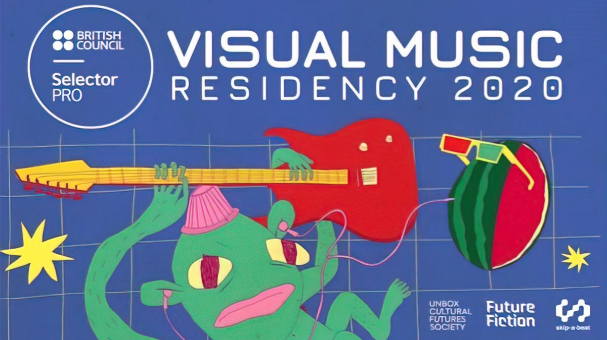
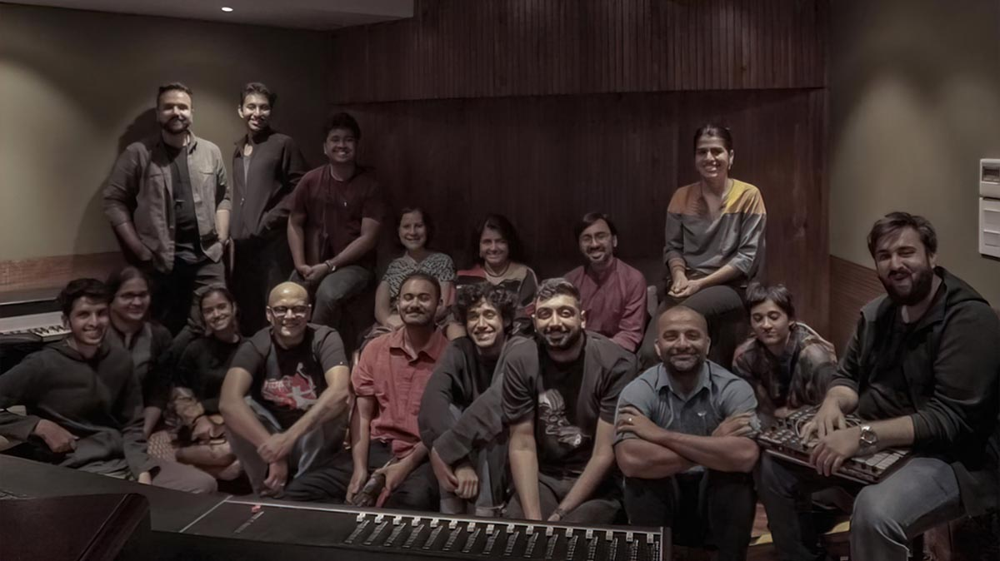

"This City Swells" is a music video that features visuals made entirely from maps and GIS data of Mumbai City. The music reflects the fast pace of the city and syncs perfectly with the visuals. The project was made possible through a residency program by the British Council for audio-visual artists, providing a platform to explore and experiment with sound and visuals/technology.
The music-video was promoted and released by skip-a-beat.
"This City Swells" is a music video that provides a unique vantage point of Mumbai City through the use of maps and land use diagrams. By integrating sound and visuals, the video uncovers the texture and vibrancy of the city.
The auditory and visual components of the video are a reflection of my personal experiences and emotions while navigating through the city. The video was created by utilizing audio-reactive algorithms that activate different elements of the visuals, resulting in a symbiotic relationship between sound and visuals.
Notably, this project marks my maiden endeavor in utilizing algorithms, code, and data to inform my creative outputs.
Process
The various maps and topographic data used for the video
The project originated from an arts residency held in Mumbai in February 2020, just before the outbreak of the pandemic. As sound-based artists and musicians with an interest in visual fields, we were tasked with developing an audio-visual piece on a theme of our choice. I chose to explore the theme of "Urbanism of Mumbai", drawing on my background in architecture and prior experience with urban research-based projects.
Despite preferring the calm of the countryside and not being a resident of a metropolis, every time I visit Mumbai, I'm immediately hit by the shift of pace and the frenzied nature of city life. Often, this shift almost felt like a high. As a result, this project aimed to capture the vibrancy and energy of the city through the medium of sound and music.
Land use maps of various locations around mumbai
This project was an opportunity for me to challenge myself both creatively and technically. Although I did not have prior experience in animation, I was determined to establish a comfortable process. As an architecture graduate, I have always had a fascination with maps and their ability to communicate the history and aspirations of cities. Land-use maps, in particular, offered a wealth of information on the patterns of settlement and demographic structure of the city. What also intrigued me about maps was their visual appeal, which I aimed to integrate into the animations. To achieve this, I utilized open-source maps and CAD plans of the city to create animations in software that I was familiar with.
Colors from the land-use maps are seperated by hue to reveal different layers of the city
Various layers of the city reveal themselves
A crucial aspect of the music video was the use of land-use maps of Mumbai that had various zones of colour which represented the different land-use types of the city. I utilized a technique that separated these zones using their respective colours and triggered each colour using audio triggers. For instance, the yellow zone was revealed with a kick drum, and the purple zone was triggered using hi-hats.
To generate these audio-visual triggers, I learned creative coding, which I had been eager to explore. This project provided me with the perfect opportunity to develop my skills and bring my vision to life. During the COVID lockdown, I spent time learning these techniques and animating the video, one scene at a time.
Seqeunce from the video with various circles found around the city
In this sequence various layers from the maps are stacked, forming an isometric view
Selector Pro - Artists Residency

The project was initiated at the Selector-Pro Residency by 'British Council' and 'Unbox Cultural Futures'
The Selector-Pro residency invited music producers, musicians, and multidisciplinary artists from India who want to expand their skills around producing music, broaden their artistic boundaries and better understand the international future ecosystem around music. It was held in Mumbai from the 13th to 16th of February 2020. It included seminars and one on one time with professionals from various fields of sound and mixed-media. Some of the notable mentors at the residency included Nainita Desai(BAFTA winning music composer), Avinash Kumar(Co-founder, Quicksand), Tejas Nair(Founder of Skip-a-beat and music producer), and Aditya Balani(Music producer and educator).

Participants of the Residency at Island City Studios
The objective of the residency was to collaborate with filmmakers and visual artists in order to create interactive works in tandem with game designers and new media artists, as well as to produce new screen-based art for exhibitions in India and beyond. Additionally, we were granted access to "Island City Studios" throughout the duration of the residency, which is regarded as one of the most highly-equipped professional recording studios in Mumbai. The residency also included talks given by mentors who detailed their approaches to the production of audio-visual content. The participants of the residency were drawn from a diverse range of backgrounds, including established choir conductors, rappers, indie musicians, and radio presenters.
While the idea for this project was conceived during the 4-day residency, the bulk of this video took over 3 months to flesh out and develop. Upon completion of the music video, I partnered with "Skip-a-Beat" - which is an electronic music label from Mumbai headed by Tejas Nair(Spryk) for the release of the song and video. The video was released on 4th September 2020.
An initial draft of the video made during the residency